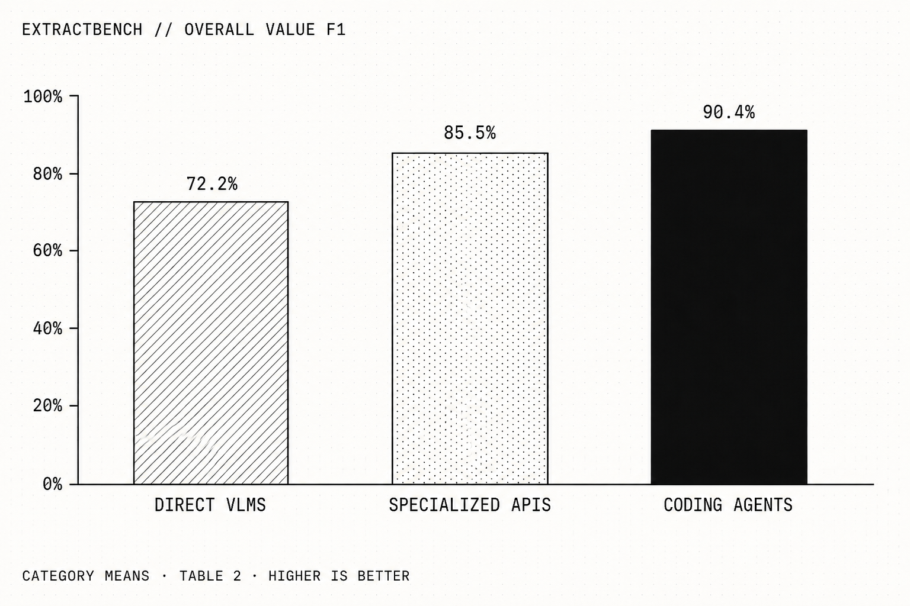

How to extract information from documents in 2026
💡 In short: use a model inside a harness, not an OCR + model system and not just a model that can read files and images.
Extracting information from documents used to be the bread and butter of applied text AI. Even though it is a relatively solved problem nowadays, performance varies drastically depending on the choices you make, which may have important consequences depending on the application.
This problem traditionally consisted of two steps:
👁️ reading the text from the document through OCR or other means
🔎 finding the relevant information inside the text, e.g. numbers, dates, companies, etc.
A few years ago, end-to-end neural network approaches combined the two and, with enough data, outperformed this decomposition. This was still pre-LLM. The issue with those early neural systems was that they worked quite well for certain types of files but failed on others, making the decomposed approach still relevant for cases where the end-to-end neural approach did not work. The win with those early systems was that they simplified the problem into one step that, given initial data, you could solve end to end: files in, information out.
Then came LLMs 🧠. They were originally not that good at this task in particular, but on the other hand they worked out of the box, unlike the other systems, which required training. And, as we all know, not working particularly well was only a short-term limitation, which brings us to today. You would expect that any frontier LLM could now solve this problem out of the box with high enough accuracy, but the answer is a bit more nuanced.
Maybe surprisingly to some, the best way to solve this problem is to use a model within a harness, instead of tasking a frontier model with extracting all the information at once. The harness allows the model to take a more iterative approach, decompose the problem, break down its work and verify its answers.
